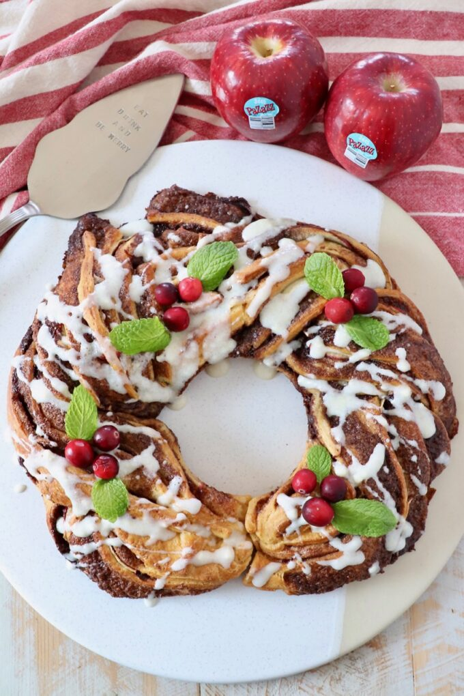
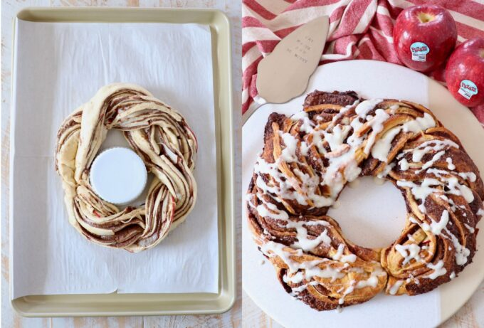

Ingredients You'll Need

- Crescent roll dough
- Granulated sugar
- Brown sugar
- Ground cinnamon
- Unsalted butter
- Pazazz apples
- Cream cheese
- Milk
- Vanilla extract
- Powdered sugar
Sweet Dessert Recipe



Mix butter, sugar and cinnamon together. Spread the mixture over the dough.

Thinly slice the apples and place them evenly over the cinnamon butter.

Roll, slice and braid the dough together. Join the ends to form a wreath.
Bake at 350°F for 20-25 minutes, or until the entire cinnamon roll wreath is golden brown.
Enjoy your delicious homemade Cinnamon Roll Wreath with Apples!
Recipe Source: Whitney Bond
Dessert Recipe: Cinnamon Roll Wreath